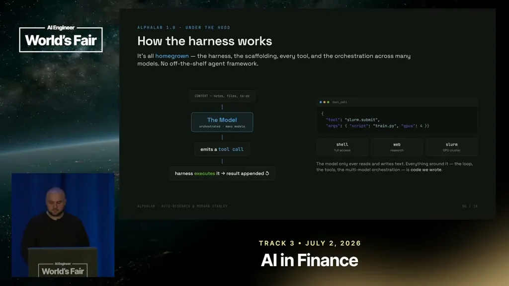
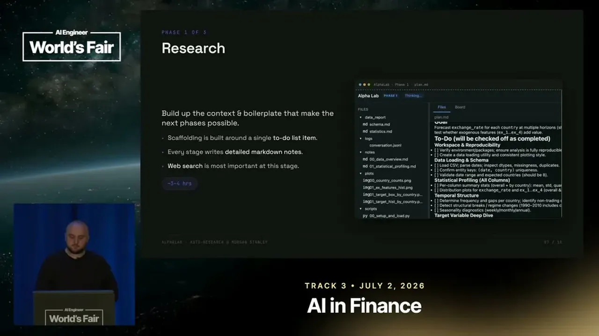
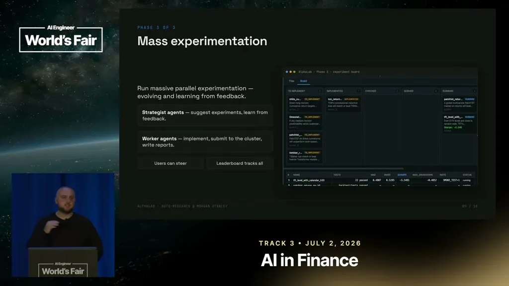
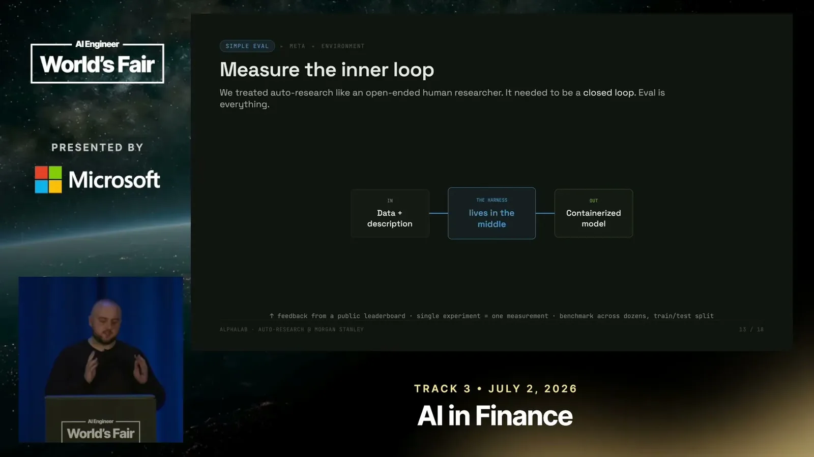
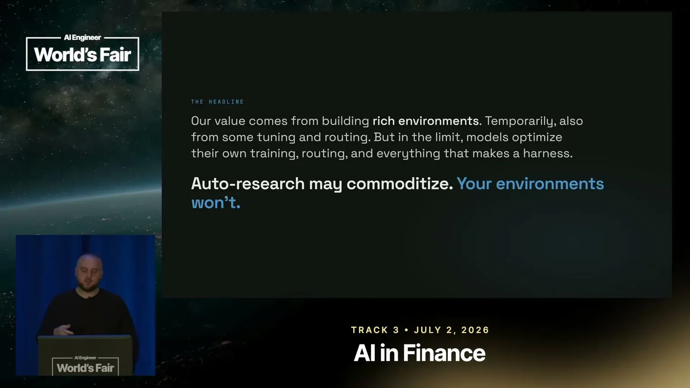
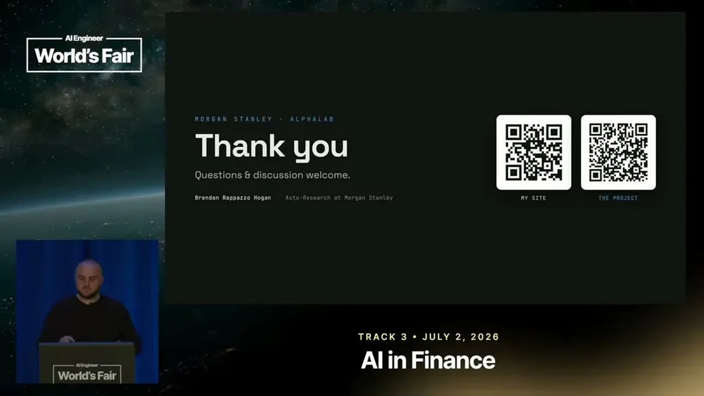

Morgan Stanley's ALPHALAB: Multi-Agent Research Across Optimization Domains
Alpha Lab is a from-scratch quant-research harness running a three-phase research loop with builder-plus-critic agents and a Kanban strategist/worker system, benchmarked on a public Nvidia Kaggle competition.
If you only read one thing
- Alpha Lab is a from-scratch, model-agnostic agent harness that runs quant research in three phases: research (roughly 3-4 hours), self-critiqued eval building via a builder agent plus two critic agents, and mass experimentation via a Kanban-style strategist/worker loop.
- On a public Nvidia Kaggle competition to fine-tune NeMoTron into a reasoning model, Alpha Lab placed in the top 12% of submissions despite only 10 iterations because the team joined late.
- The team's recurring lesson is that eval quality, not model capability, is the bottleneck; Alpha Lab 2.0 shifts toward meta harness optimization where the LLM improves the harness itself, on the bet that auto-research becomes a commodity while durable value shifts to building proprietary evaluation environments.
This traces Alpha Lab's flow from a builder-critic eval loop through mass experimentation to a meta step where the LLM improves the harness itself; exact iteration mechanics beyond what's quoted are simplified (ours).
Why this talk is a blueprint, not a take (ours)
Scope: An internal, model-agnostic quant-research harness (Alpha Lab) built by Morgan Stanley's roughly 30-person AI research group for well-posed, homogeneous prediction problems across trading desks.
A homegrown, provider-agnostic agent loop where the model only ever emits text tool calls (shell, web search, Slurm) and the harness executes and appends results, run through three phases (research, self-critiqued eval building, mass strategist/worker experimentation) to go from a dataset and a natural-language prediction goal to a suite of trained models. Public benchmarks cited include a top-12%-of-submissions result on an Nvidia Kaggle NeMoTron fine-tuning competition with only 10 iterations and a public LLM-pretraining-speedrun result (Alpha Lab plus Opus 4.6 beat greedy-loop and single-shot baselines for roughly $200).
Prerequisites the talk implies:
- A ~30-person PhD-level AI/ML research group able to write a harness, tools, and orchestration from scratch rather than adopting an off-the-shelf agent framework
- Well-posed, homogeneous prediction problems recurring across desks, so the same harness shapes reuse (per the slides, 'well-posed' and 'highly homogeneous across desks')
- A GPU cluster reachable through a job-submission abstraction (Slurm in this case) and existing data/prebuilt scaffolding to plug into
What the talk does not say:
- No cost, headcount-hours, or timeline figures for building Alpha Lab 1.0 itself, only per-run compute cost estimates in the benchmark table (~$40-$200)
- No detail on how the qualitative research-process rubrics are written or by whom, beyond 'encoding human and enterprise expertise'
- No account of failure rate or false-positive rate for the eval-building critic loop; the talk states it still failed on their hardest internal problems but does not quantify how often
If you were to replicate one thing first: Start by defining one narrow, well-posed, recurring prediction problem in your domain and build a strict evaluation for it before letting any agent run autonomous research against it.
| Component | What it does (from the talk) | Evidence | Slide |
|---|---|---|---|
| Custom harness (loop) | Homegrown loop, scaffolding, tools, and multi-model orchestration; the model only emits tool calls, the harness executes them and appends results | c1 · 06:47 |  |
| Shell / web / Slurm tools | Three main tools: full shell access to write and run code, web search for state-of-the-art methods, Slurm to submit GPU cluster jobs | c9 · 07:18 | |
| Research phase | Builds a to-do list scaffolded around context-gathering and hypothesis forming, taking roughly 3-4 hours, writing markdown notes per item | c2 · 09:21 |  |
| Eval-building phase (builder + 2 critics) | A builder agent writes the eval code, then a conceptual critic and a programmatic critic review it before mass experimentation starts | c3 · 09:52 | |
| Mass experimentation (strategist/worker) | Strategist agents suggest experiments and learn from feedback; worker agents implement them, submit to the cluster, and write reports, tracked on a Kanban-style board | c4 · 13:26 |  |
| Bad-eval failure mode | LLMs make silly (non-malicious) mistakes; optimizing against a bad eval causes the whole research process to fall apart | c5 · 09:21 |  |
| Outer-loop tuning (human -> GEPA -> meta-harness) | Tunes the harness itself in increasingly automated stages: human hand-crafted prompts, then GEPA automated prompt/context evolution, then a meta-harness that tunes its own structure | c8 · 17:05 |  |
| Proprietary evaluation environments | The team's argued source of durable value once general auto-research becomes commoditized | c10 · 19:11 |  |
Built from scratch, not an off-the-shelf framework
- Morgan Stanley's roughly 30-person AI research group (half academic, half applied, per the slides) wrote Alpha Lab's harness entirely in-house rather than adopting an existing agent framework, using functional tool calling to stay provider-agnostic across Anthropic, OpenAI, and open-source models.
- The model only ever emits a tool call; the harness executes it and appends the result.
- The three main tools are full shell access, web search, and Slurm to submit jobs to the GPU cluster.
“the harness is actually all our own code. So we decided not to use any off-the-shelf agent framework.”
said at 06:47“the sort of three main ones are one full shell access, so it can write any bash command”
said at 07:18Three-phase research loop
- Given a dataset and a natural-language prediction goal, Alpha Lab runs a research phase (building context and forming hypotheses, taking roughly 3-4 hours), then an eval-building phase where a builder agent writes the evaluation code and two critic agents (one conceptual, one programmatic) review it in a loop until satisfied, before mass experimentation begins.
“this can vary a lot, but um it takes, you know, roughly around 3 to 4 hours.”
said at 09:21“our attempt to be more robust is have this sort of multi-agent framework. So one is tasked with first building the eval, like actually writing all of the code, and then that goes off to two critic agents.”
said at 09:52Benchmark results
- On an Nvidia-hosted Kaggle competition to fine-tune the NeMoTron model into a reasoning model, Alpha Lab placed in the top 12% of submissions, despite having only 10 iterations to work with because the team joined late.
“hosted by Nvidia to fine-tune their NeMo Tron model to be a reasoning model. Uh, and it got in the top 12% of submissions.”
said at 13:26Eval quality is the real bottleneck
- Rappazzo repeatedly relearned the same lesson: LLMs aren't malicious but make silly mistakes, and optimizing against a bad eval causes the whole system to fall apart, so the team became strict and Kaggle-style opinionated about eval design.
“LLMs aren't malicious, but they can make, you know, very silly mistakes and if you're optimizing against a bad a bad eval, the whole thing kind of falls apart.”
said at 09:21“this is a lesson I learned over and over, like monthly, working with these models, you have to start with good eval.”
said at 16:03Alpha Lab 2.0: toward a self-improving harness
- The next version shifts the team's own effort from manually designing the research harness to meta harness optimization, where the LLM examines its own traces and results and improves the harness itself.
- Rappazzo predicts general auto-research will become commoditized, so an enterprise's durable value comes from building its own proprietary evaluation environments.
“this ability to do general auto research, I think will kind of become a commodity.”
said at 18:39“what we're doing now is really this meta harness optimization, where the LLM is looking at the trace, is looking at the about, you know, the results, and improving the harness itself.”
said at 17:05Commentary (ours)
The top-12% Kaggle result is presented with the caveat that only 10 iterations were used, so it reads as a lower bound on Alpha Lab's ceiling rather than a fully fair comparison against submissions built with more iterations.

Underlying detail — every claim, typed and timestamped (10)
| Stance | Claim | t |
|---|---|---|
| asserts | Morgan Stanley wrote Alpha Lab's harness entirely in-house rather than using an off-the-shelf agent framework. | 06:47 |
| asserts | Alpha Lab's initial research phase, building context to form and test hypotheses, takes roughly 3-4 hours. | 09:21 |
| asserts | Eval building uses a multi-agent loop: one agent writes the eval code and two critic agents review it before experimentation begins. | 09:52 |
| asserts | Alpha Lab placed in the top 12% of an Nvidia-hosted Kaggle competition to fine-tune NeMoTron into a reasoning model, despite only 10 iterations. | 13:26 |
| warns | LLMs make silly, non-malicious mistakes, and optimizing against a bad eval causes the whole research process to fall apart. | 09:21 |
| predicts | General auto research will become a commodity, shifting durable enterprise value toward building proprietary evaluation environments. | 18:39 |
| asserts | The team relearned repeatedly that a clear, good evaluation method must come before treating the system like an autonomous researcher. | 16:03 |
| asserts | Alpha Lab 2.0 has the LLM examine its own traces and results to improve the harness itself, rather than the team manually tuning it. | 17:05 |
| asserts | The harness gives the model three main tools: full shell access, web search, and Slurm to manage the GPU cluster. | 07:18 |
| predicts | Rappazzo believes an enterprise's or human expert's durable value comes from building evaluation environments, not from the auto-research capability itself. | 19:11 |
Machine-readable copy embedded in this page (script#ontology) and in the corpus ontology.